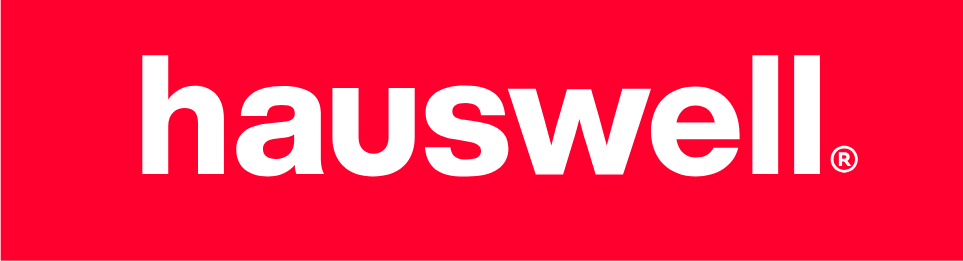
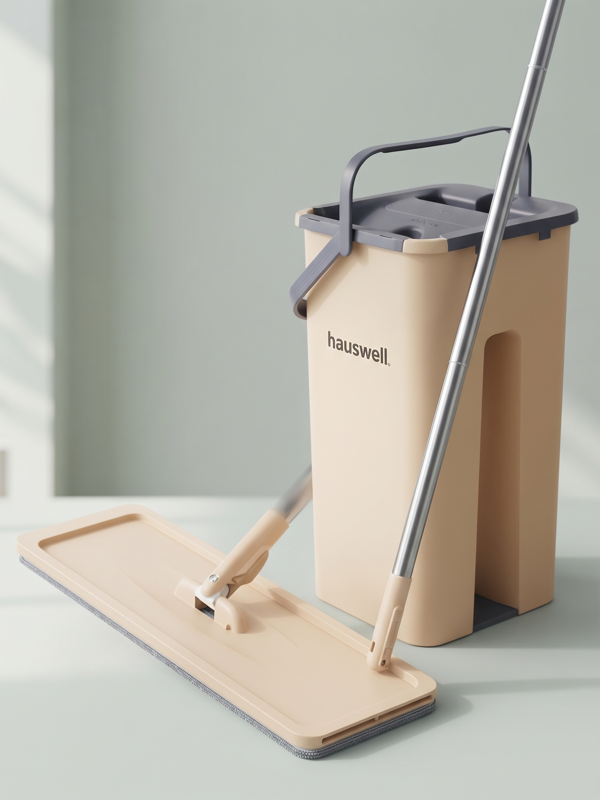
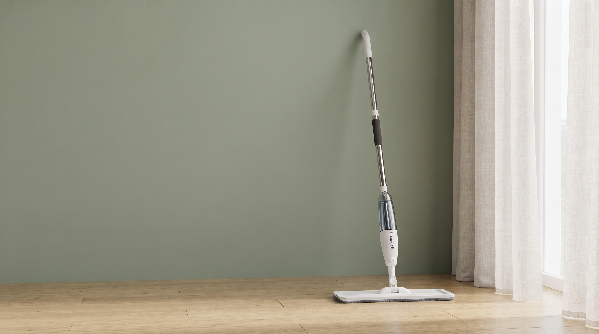
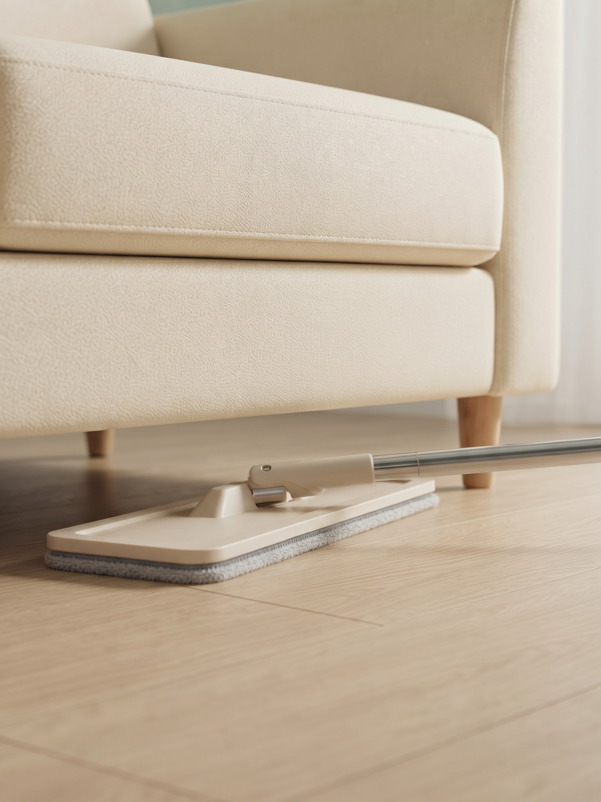
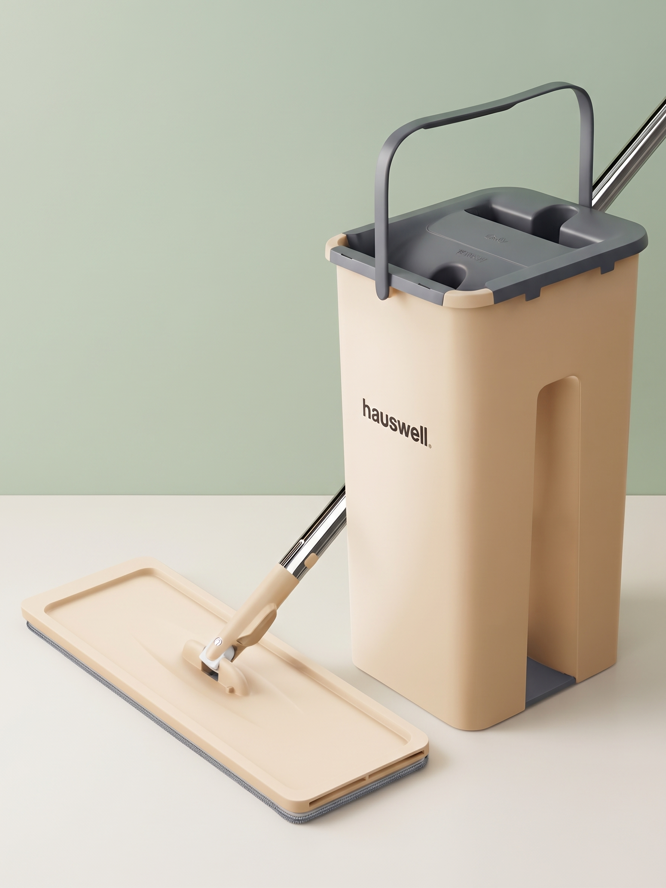
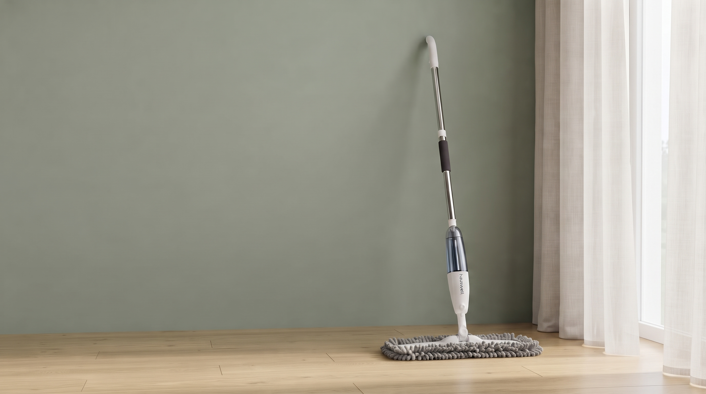
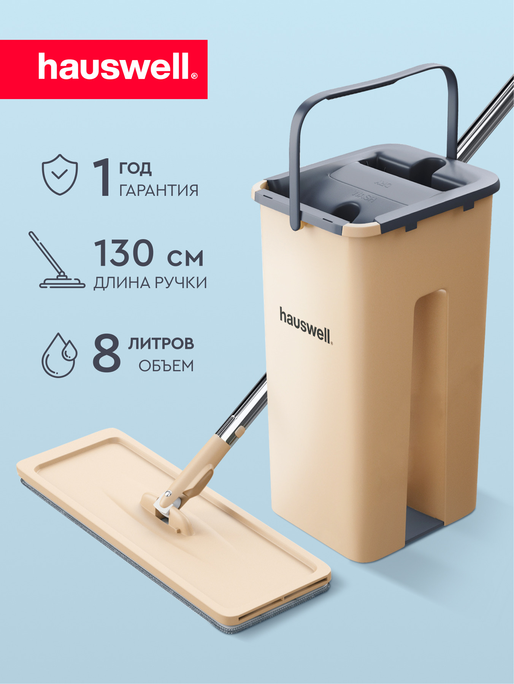
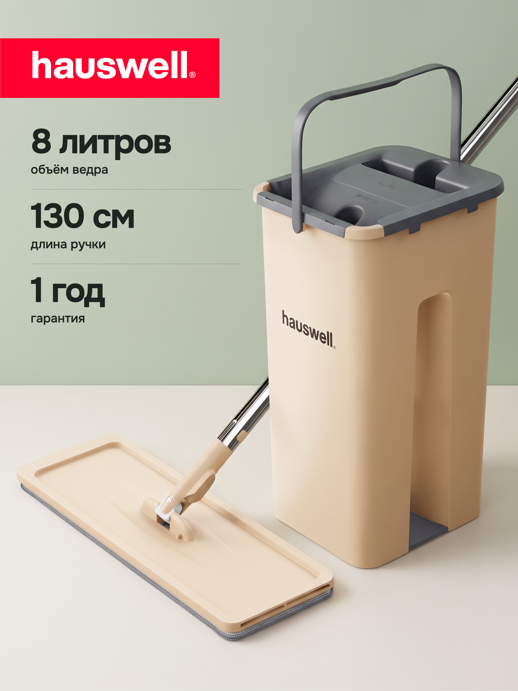

КОНЦЕПТ01
PRODUCT
Smart Mop.
Продуманный быт.
AI-FIRST COMMERCE DESIGNGEMINI

Независимый концептКонтакт ↗AI-first дизайн для товаров для дома.
От предметного образа — к системе контента.
КОНЦЕПТ ДЛЯ КАНДИДАТУРЫ НА LEAD DESIGNER
Арт-дирекшн · AI-визуал · карточки и баннеры
Авторское исследование для кандидатуры на AI-first Lead Designer. Не официальный проект HAUSWELL; коммерческий запуск и результаты не заявлены.
Реальные пробы из этого проекта. Эти кадры оставлены здесь как свидетельства ошибок — в итоговую предметную серию они не входят.

01 / ОТКЛОНЕНОДва крепления и две штанги на одной платформе. Атмосфера не компенсирует ошибку товара.

02 / ПЕРЕСМОТРЕНОПлоская насадка не совпала с петлевой насадкой выбранного PDF-референса. Интерьерный кадр заменён.

03 / ОТКЛОНЕНОВ сцене под диваном изменена геометрия шарнира и опоры. Этот кадр исключён из предметной серии.
Сохранить атмосферу.
Исключить ошибки.
Сократить серию.

Видимые детали сопоставлены с исходником. Полная конструкция, размеры и точный артикул этим кадром не подтверждены.
По видимым элементам кадр близок к исходному макро. Точное число пучков щетины и читаемость маркировки не подтверждены.
Шалфей, бежевый пластик и графит. Один предмет — два масштаба: общая композиция и конструктивная деталь.
Для компактной версии выбраны два изображения Smart Mop. Они показывают визуальное направление и внимание к устройству продукта. Кадры с неподтверждёнными соединениями штанги и геометрией нижнего узла исключены из серии.
Hero и макро сопоставлены с товарными референсами. Вывод относится только к показанным деталям: полная штанга, размеры и конкретная комплектация этим не подтверждаются.
Два масштаба, единая палитра и мягкий дневной свет. Короткая история продукта без спорных кадров.
Две задачи для одной серии: показать товар целиком и раскрыть устройство в детали. Генерации созданы в Gemini по товарным референсам; общая палитра и свет объединяют кадры. Композиция, типографика и текст собраны в макеты отдельно.
Продуманный быт.
Щётки · пластик · фактура
Обложка делает предмет узнаваемым, макро помогает рассмотреть устройство. Это концепты подачи для e-commerce: требования Wildberries и Ozon и влияние на клики здесь не проверялись.
Второй продукт внутри той же палитры. Общая интерьерная сцена и крупный план детали создают контраст масштаба.

Свет, материалы и повседневный предмет в одной визуальной истории.
Новая спокойная версия кадра без активных пузырьков. Горловина, форма корпуса и хват требуют отдельной сверки с исходником; точный артикул и размеры не подтверждаются.
Широкий интерьерный кадр задаёт контекст. Крупный план переводит внимание на прозрачность, форму и взаимодействие с предметом.
Оба изображения созданы пользователем в Gemini по предоставленным товарным референсам и брифам из чата. Это концептуальная серия, а не документальная съёмка.
Для бака использована новая генерация на основе страницы 16 предоставленного PDF; прежний результат проверки автоматически на неё не переносится. В интерьерном кадре исправлена насадка; фактура петель остаётся интерпретацией. Верхняя рукоятка и курок этим ракурсом не подтверждены. Это атмосферный концепт.
Пример рекламной адаптации атмосферного концепта: короткий заголовок, единая палитра и предметный акцент. В этой версии установлен предоставленный готовый макет.
Предоставленный авторский баннер показан целиком. Состав материалов указан в макете; предметная точность и требования рекламной площадки отдельно не подтверждены.
Исходник задаёт конструкцию товара. Бриф задаёт свет, палитру и композицию. Генерации проходят визуальное ревью; выбранные кадры становятся системой карточек и баннеров. В этом исследовании часть предметных деталей ещё требует проверки.


Слева — страница 22 предоставленного PDF. Справа — авторская адаптация. Характеристики 8 л, 130 см и 1 год гарантии взяты из исходника; актуальность для конкретного артикула отдельно не проверялась.
Пользователь создал изображения в Gemini, направление и правки обсуждались в чате. В итоговой серии — предметный образ, макро, интерьер и деталь взаимодействия; на их основе собраны два концепта карточек и рекламные баннеры. Три спорных кадра Smart Mop исключены. У SprayPro исправлена насадка; интерьерный кадр используется только как атмосферная концепция.
ПРОВЕРКА → ОТБОР → КОМПАКТНАЯ СЕРИЯДля адаптации под маркетплейс: уточнить артикул и УТП, сверить товар, проверить читаемость обложки в миниатюре, подготовить варианты и провести A/B-тест. Критерии теста и связь кликов с продажами согласовать с командой. Тестирование в этом проекте не проводилось.
Официальные изображения, комплектация и конструкция. Зафиксировать то, что AI не должен менять.
Палитра, свет, ракурсы и визуальная иерархия. Одна система для обеих продуктовых историй.
Создана серия Gemini по товарным исходникам и уточнённым брифам. Неудачные варианты исключены из итоговой предметной серии. При искажениях товара следующий шаг — локальная коррекция или композитинг с оригиналом.
Проведена визуальная сверка с исходниками. Она не заменяет проверку физического образца или технического чертежа. Перед внешним использованием определить точный артикул и проверить требования выбранной площадки.
Проектирую сложные цифровые продукты и создаю дизайн-системы. Мой опыт объединяет Enterprise UX, B2B/B2E, e-commerce и визуальные коммуникации брендов.
В МСУ-1 работала над SuperApp, корпоративными порталами, интерфейсами 1С и системой отчётности Power BI. Создавала дизайн-системы с нуля, вела дизайн-ревью и приёмку реализации. В «Едим Дома» проектировала покупку кулинарных курсов и сервис планирования питания; в Clarins — digital-материалы для e-commerce и CRM.
Использую AI для черновиков и поиска вариантов. В пилоте с GPT работала со структурированными промптами для интерфейсных ТЗ; решения и проверка качества оставались за мной.
HAUSWELL — отдельное концептуальное исследование AI-first commerce design. Оно развивает мой опыт системного и бренд-дизайна; коммерческие результаты этого проекта не заявлены.